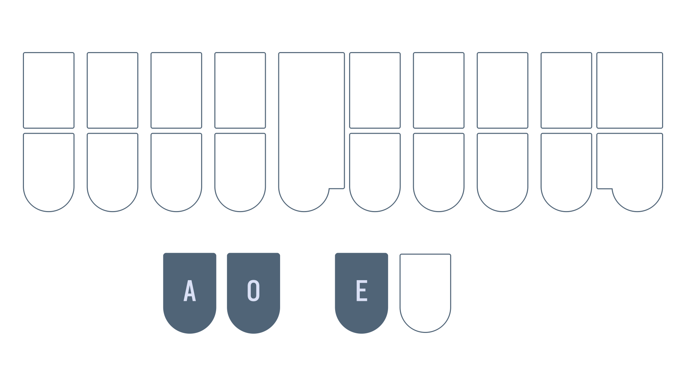
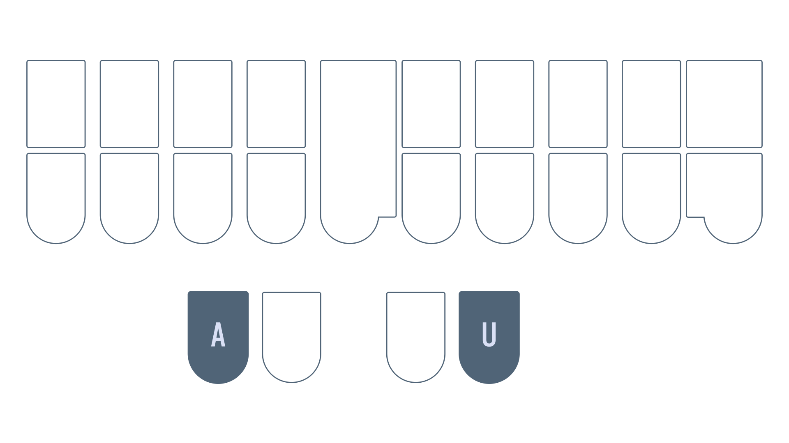

Chapter 8: Vowels continued
Recommended pace
Recommended time to spend on this chapter: 2–3 days.
- Read
AOEand complete the drill (15 minutes)- Repeat the drill as needed
- Read
AOEUand complete the drill (15 minutes)- Repeat the drill as needed
- Read
AUand complete the drill (15 minutes)- Repeat the drill as needed
- Read
AEand complete the drill (15 minutes)- Repeat the drill as needed
- Read
AOand complete the drill (15 minutes)- Repeat the drill as needed
- Attempt the test (20 minutes)
- Practise as needed
Remember to take breaks!
Useful links
- Single syllable
AOEwords drill - Single syllable
AOEUwords drill - Single syllable
AUwords drill - Single syllable
AEwords drill - Single syllable
AOwords drill - Chapter 8 test
Intro
Vowels are reportedly the most difficult part of learning steno. Part of this is due to the fact that vowels are pronounced differently in different dialects of English. Unfortunately, I grew up learning General American English. This is the accent that Lapwing is based on. If you speak a different accent, you may have to subvocalize with an American accent.
I'm making an effort to include IPA with the hopes that they will be useful for some. However, I must make the disclaimer that I have never taken a formal linguistics course nor am I an enthusiast. I apologize for any errors that may be present in this page—do reach out to me if you have corrections!
What is a conflict?
Since steno is a primarily phonetic system, homophones can be tricky to deal with. For example, the words "pair" and "pear" are pronounced exactly the same, but it is not possible to assign them both to PAEUR. We would call this an example of a "conflict"; two words conflict with the same outline. In Lapwing theory, spelling is the primary way to resolve conflicts. This particular example of "pair" and "pear" is covered later in this chapter.
AOE

AOEis the "long e" sound as in "beet"- /i/
AOERis the sound as in "peer"- /ɪər/
Examples
- peel
PAOEL - teal
TAOEL - here
HAOER - seer
SAOER
Mnemonics
Feel free to come up with your own or even suggest some!
- If the notion of "long" and "short" vowels (as described in the previous chapter) is familiar, you can think of transforming the
Ekey into a "long e" by combining it with the two keys on the other side- "Long e" =
E+ (vowel keys on other hand)
- "Long e" =
Section practice
Single syllable AOE words drill
AOEU

AOEUis the "long i" sound as in "ice"- /aɪ/
AOEURis the sound as in "ire"- /aɪər/
Examples
- light
HRAOEUT - tile
TAOEUL - liar
HRAOEUR - tire
TAOEUR
Mnemonics
Feel free to come up with your own or even suggest some!
- If the notion of "long" and "short" vowels (as described in the previous chapter) is familiar, you can think of transforming the "i" chord into a "long i" by combining it with the two keys on the other side
- "Long i" =
EU+ (vowel keys on other hand)
- "Long i" =
Section practice
Single syllable AOEU words drill
AU

We learned the following in chapter 5 (rule 2 of short vowels):
If a word is spelled using multiple vowel letters that (together) are pronounced as a single short vowel, use the vowel key that corresponds to the sound.
The AU chord is one exception to this rule. It is used in words like "bought", and "caught". These have the same sound as the O key by itself. However, AU is used in these words as they are not spelled with a single "o".
So while the following are written using O:
- bot
PWOT - cot
KOT
The words below are written using AU:
- bought
PWAUT - caught
KAUT
Minor conflicts
Words spelled with "au" are given A*UL when there is a conflict:
- call
KAUL - caul
KA*UL - hall
HAUL - haul
HA*UL
Words spelled with "awl" are also given A*UL when there is a conflict:
- all
AUL - awl
A*UL - ball
PWAUL - bawl
PWA*UL
There aren't very many of these conflicts to warrant a practice drill, but it is important to keep this in mind when you encounter unexpected output in everyday writing.
Section practice
Single syllable AU words drill
AE for AEU

Take a look at the following words:
- pair
- pear
The PAEUR outline cannot be assigned to both of these words. This is where AE comes into play. It is a secondary chord that can represent the same vowel as AEU when there is conflict.
In these conflicts involving the "long a" sound, one word will use AEU. This is the word with higher priority. The other word will use AE; this is the word with lower priority. Spelling is used to determine the priority to assign to a word.
Highest priority: "ai" or "ei" spellings
Words spelled with "ai" or "ei" get the highest priority, and are always written using AEU:
AEUTeightTPAEURfairPHAEUPBmainPAEURpair
Medium priority: "a_e" spellings
These words receive medium priority. Use AE for these words if there is a conflict with a word in the above category.
AETate (AEUTis already "eight")TPAERfare (TPAEURis already "fair")TAEURtare ("tair" is not a word)PHAEPBmane (PHAEUPBis already "main")
Lowest priority: "ea" spellings
These words get lowest priority. If there is a conflict with any of the two categories above, use AE.
TAERtear (TAEURis already "tare")PAERpear (PAEURis already "pair")SWAEURswear ("swair" and "sware" are not words)
NOTE: remember that
AEis only used to resolve conflicts. Try not to associate this chord with any specific spelling or sound.
Flowchart Summary
Here's a flowchart to summarize the above:

AE for AOE
In addition to the AEU vowel, AE can also represent the AOE vowel when there are conflicts. Again, certain spellings are assigned to higher priority, while lower priority spellings use AE.
Highest priority: "ee" spellings
All words spelled with "ee" use AOE
TPAOETfeetPAOEpeeSAOEDseedTAOEtee
Medium priority: "ie" spellings
PAOESpiece
Lowest priority: "ea" spellings
TPAETfeat (TPAOETis already "feet")PAEpea (PAOEis already "pee")PAESpeace (PAOESis already "piece")TAEtea (TAOEis already "tee")
Flowchart Summary
Here's a flowchart to summarize the above:

Other uses of AE for disambiguating
AE can also be used for "ea" spellings that conflict with short vowels.
- lead
HRAED(HREDis already "led") - bread
PWRAED(PWREDis already "bred")
AE 3-way conflicts
You may wonder about, or even encounter a few 3-way conflicts. For example, "pair", "pare", and "pear". There really aren't that many of these so Lapwing doesn't actually provide any rules on how to deal with these.
By default the Lapwing dictionary assigns PAER to "pear" and PA*EUR to "pare". The reason for this is that "pear" is much more common and is considered higher priority than "pare". You are, of course, free to disagree with this logic and change things around! It is really up to you how you want to deal with these conflicts.
NOTE: considering priority based on how common words are is generally used as a last resort where the rules are fuzzy or nonexistent (like in this example). You will not see this in any concrete Lapwing rules.
Section practice
Single syllable AE words drill
AO

This chord has two uses:
- Words spelled with "oo", regardless of their pronunciation
- wood
WAOD - hood
HAOD - blood
PWHRAOD - tool
TAOL
- wood
- Words spelled with "oa" to resolve conflicts
- oar
AOR(ORis already "or") - soar
SAOR(SORis already "sore") - boar
PWAOR(PWORis already "bore") - road
RAOD(ROEDis already "rode")
- oar
NOTE: you may be tempted to write "boat" as
PWAOT, but this is incorrect. The word "boat" should be written asPWOET, first and foremost (since there are no homophones with "boat"). Therefore,PWAOTis actually the word "boot".
Section practice
Single syllable AO words drill
Chapter 8 test
This chapter's test consists of all the vowel drills (including chapter 7 material). Make sure your settings are configured as such:

- Limit word count: 45
- Start from word: 1
- Repetitions: 3
- Sort: random
- Show hint for every word: unchecked
- Hide hint on last repetition: unchecked
- Show hint on misstroke: checked
Click here to access the chapter 8 test
Recommended completion goal
This is only a suggestion; it is not a requirement to move to the next chapter!
Aim for 10–20 WPM with 90% accuracy.
You may use the test material as practice!